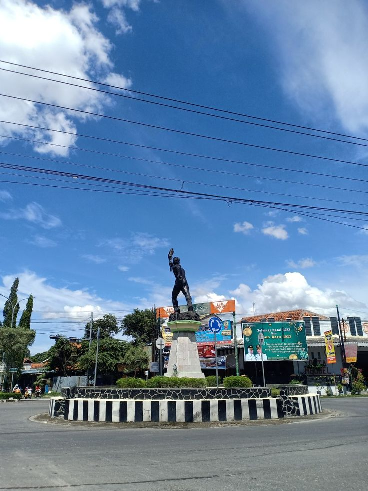
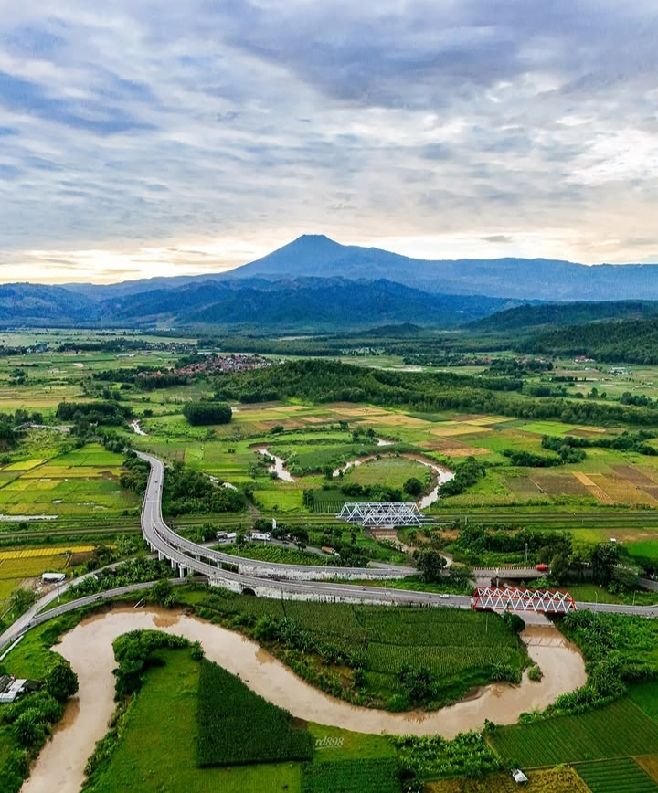
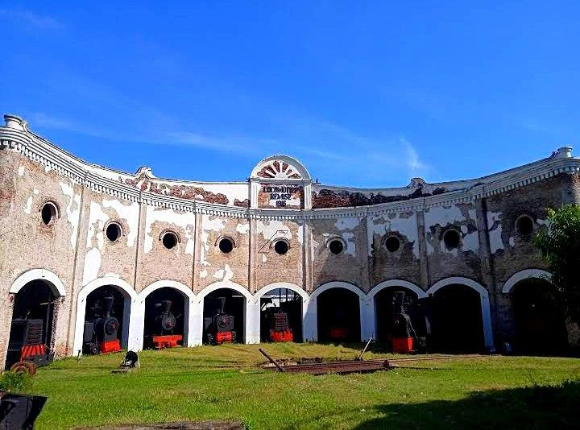
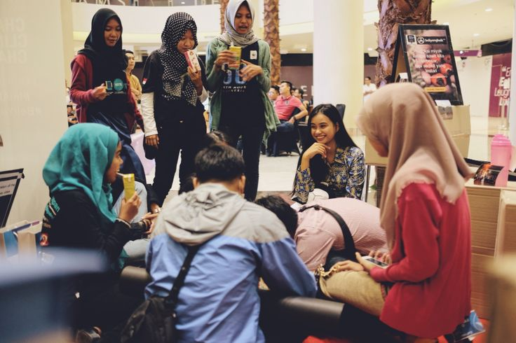
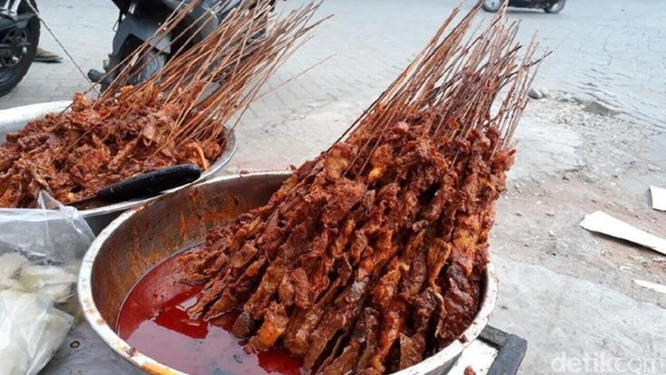
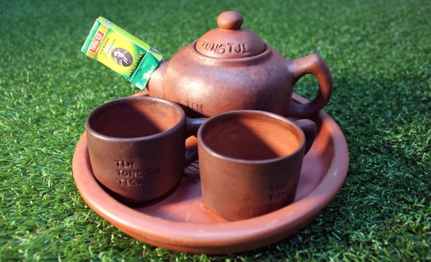
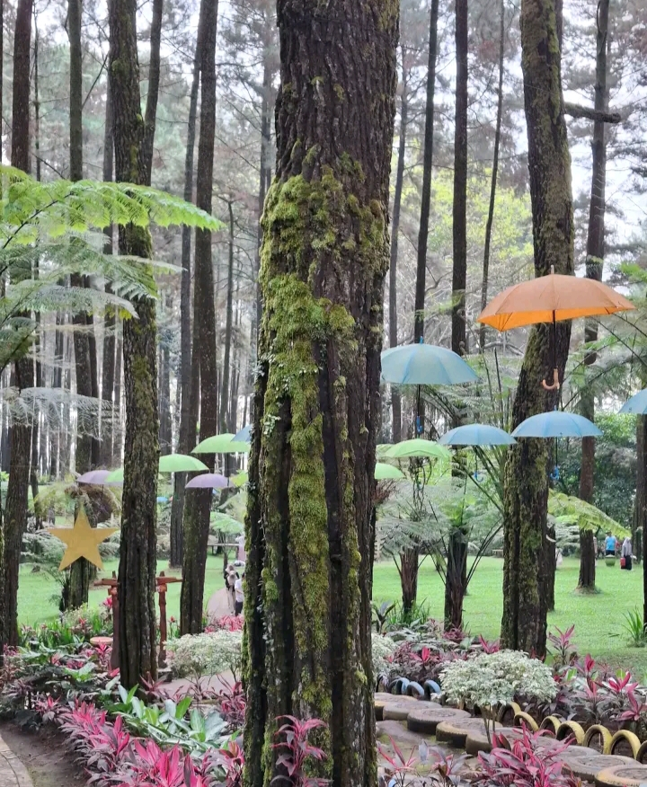
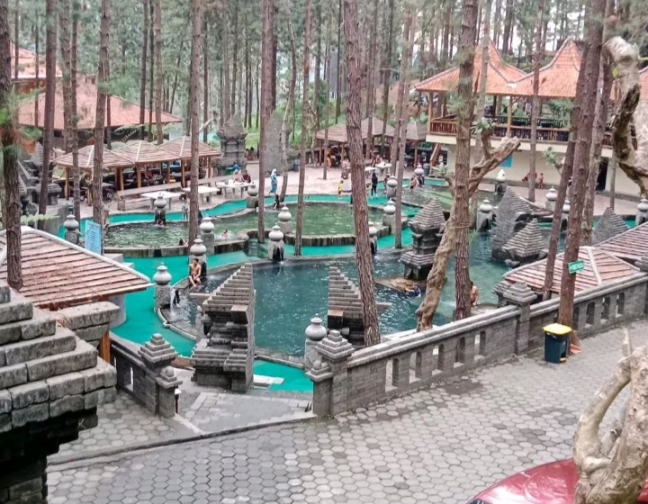
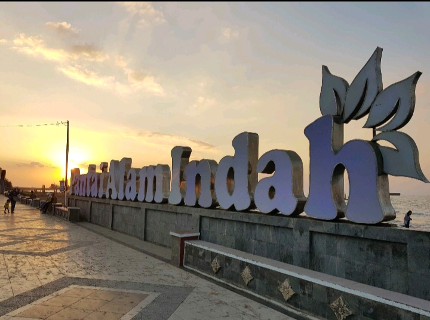
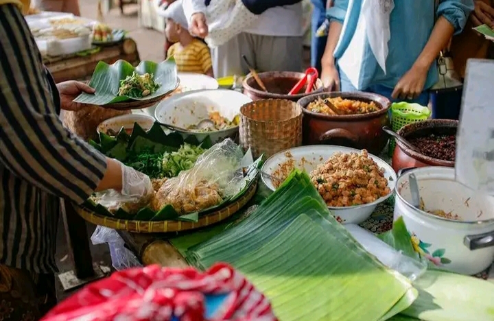

Sejarah, Budaya, dan Identitas Kabupaten Tegal sebagai Wilayah Agraris dan Tradisional
°Nama Tegal diyakini berasal dari kata "Tetegual" yang berarti tanah lapang yang luas dan subur. Sejak dahulu wilayah ini dikenal sebagai daerah pertanian yang menghasilkan berbagai komoditas seperti padi dan tebu. Kondisi tanahnya yang subur menjadikan masyarakat menggantungkan hidup pada sektor agraris.
°Letak geografisnya yang berada di jalur Pantai Utara Jawa menjadikan Tegal berkembang sebagai pelabuhan penting dalam jalur perdagangan Nusantara. Para pedagang dari berbagai wilayah singgah di pelabuhan Tegal untuk melakukan aktivitas jual beli hasil bumi dan kebutuhan pokok.
°Seiring waktu, Tegal berkembang menjadi wilayah yang tidak hanya berfokus pada pertanian, tetapi juga perdagangan, pelayaran, dan industri kecil yang menopang perekonomian masyarakatnya.

🧭 Batas Wilayah:
Utara: Laut Jawa dan Kota Tegal
Timur: Kabupaten Pemalang
Selatan: Kabupaten Banyumas
Barat: Kabupaten Brebes
Wilayahnya terdiri dari dataran rendah di utara dan pegunungan di selatan (kawasan Gunung Slamet), sehingga memiliki iklim tropis yang cocok untuk pertanian.

Pada masa kerajaan Islam di Jawa, wilayah Tegal berada dalam pengaruh Kesultanan Demak dan kemudian Kesultanan Mataram. Wilayah ini berkembang sebagai daerah pertanian yang memasok kebutuhan pangan kerajaan.
Pada masa kolonial Belanda, Tegal menjadi pusat produksi gula karena banyaknya perkebunan tebu di sekitarnya. Beberapa pabrik gula berdiri dan menjadi sumber ekonomi utama. Pelabuhan Tegal juga digunakan untuk mengekspor hasil bumi ke berbagai wilayah.
Pada masa perjuangan kemerdekaan Indonesia, masyarakat Tegal turut aktif dalam pergerakan nasional melawan penjajahan. Setelah Indonesia merdeka, Tegal berkembang menjadi kota perdagangan, jasa, serta pusat pendidikan dan industri kecil.

Masyarakat Tegal menggunakan bahasa Jawa dialek ngapak yang memiliki ciri khas pelafalan tegas dan lugas. Dialek ini berbeda dengan bahasa Jawa halus dari Yogyakarta atau Surakarta.
Contoh percakapan sederhana dalam dialek Tegal: “Lagi ngapa kowe?” “Arep lunga neng pasar.”
Budaya masyarakat Tegal dikenal sederhana, pekerja keras, serta memiliki solidaritas tinggi. Nilai gotong royong dan kekeluargaan masih dijunjung tinggi dalam kehidupan sehari-hari.

Kabupaten Tegal memiliki beragam makanan tradisional yang menjadi ciri khas daerah, seperti kupat glabed, sate kambing, dan teh poci. Selain itu, ada pula sega ponggol dan olahan tahu aci yang banyak digemari masyarakat.
Makanan tradisional ini tidak hanya menjadi bagian dari kuliner khas, tetapi juga mencerminkan budaya dan kebiasaan masyarakat Kabupaten Tegal.


Beberapa destinasi wisata yang terkenal di wilayah Tegal antara lain Pantai Alam Indah, Pemandian Air Panas Guci, serta Alun-Alun dan Taman Poci. Destinasi tersebut menjadi daya tarik wisatawan lokal maupun luar daerah.
Selain wisata alam, Tegal juga memiliki wisata kuliner dan budaya yang menarik untuk dikunjungi.



Ekonomi Kabupaten Tegal didukung oleh sektor pertanian, perdagangan, dan industri kecil. Pertanian menjadi mata pencaharian utama masyarakat, dengan hasil seperti padi, jagung, dan sayuran.
Perdagangan berkembang melalui pasar tradisional dan usaha kecil masyarakat. Selain itu, industri rumahan seperti kerajinan logam dan makanan olahan juga membantu perekonomian daerah.
Kabupaten Tegal juga memiliki potensi pariwisata, seperti Guci, yang mendukung perdagangan dan usaha masyarakat.
